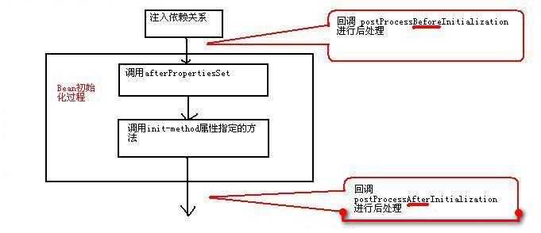

Spring Introduction
The Spring framework was developed by Rod Johnson, and the first version was released in 2004. Spring is a framework extracted from actual development, so it handles many common steps in development, leaving only the application-specific parts to developers, greatly improving the development efficiency of enterprise applications.
The advantages of Spring are summarized as follows:
- Low-invasive design with very low code pollution.
- Independent of various application servers. Applications based on the Spring framework can truly achieve the "Write Once, Run Anywhere" promise.
- Spring's IoC container reduces the complexity of replacing business objects and improves decoupling between components.
- Spring's AOP support allows common tasks such as security, transactions, and logging to be managed centrally, thus providing better reuse.
- Spring's ORM and DAO provide good integration with third-party persistence frameworks and simplify low-level database access.
- Spring is highly open and does not force applications to completely rely on Spring. Developers are free to choose part or all of the Spring framework.
The composition structure diagram of the Spring framework is as follows:

Spring's Core Mechanism
Managing Beans
Programs mainly access the Beans in the container through the Spring container. ApplicationContext is the most commonly used interface of the Spring container. This interface has the following two implementation classes:
- ClassPathXmlApplicationContext: Searches for configuration files from the class loading path and creates the Spring container based on the configuration files.
- FileSystemXmlApplicationContext: Searches for configuration files from a relative or absolute path in the file system and creates the Spring container based on the configuration files.
public class BeanTest{
public static void main(String args[]) throws Exception{
ApplicationContext ctx = new ClassPathXmlApplicationContext("beans.xml");
Person p = ctx.getBean("person", Person.class);
p.say();
}
}
Using Spring in Eclipse
In IDE tools such as Eclipse, users can create their ownUser Library, and then put all Spring JAR packages into it. Of course, they can also put JAR packages directly in the project's/WEB-INF/libdirectory. However, if usingUser Library, when the project is published, the JAR files referenced by the user library need to be published with the application, that is, copy the JAR files used by the User Library to the/WEB-INF/libdirectory. This is because for a Web application, when Eclipse deploys a Web application, it will not copy the JAR files from the user library to the/WEB-INF/libdirectory, and manual copying is required.
Dependency Injection
The Spring framework has two core functions:
- The Spring container acts as a super factory, responsible for creating and managing all Java objects. These Java objects are called Beans.
- The Spring container manages the dependencies between Beans in the container. Spring uses a method called "dependency injection" to manage the dependencies between Beans.
Using dependency injection, you can not only inject ordinary property values into Beans, but also inject references to other Beans. Dependency injection is an excellent decoupling method that allows Beans to be organized together through configuration files, rather than being coupled together in a hard-coded manner.
Understanding Dependency Injection
Rod Johnson was the first to attach great importance to managing the collaborative relationships of Java instances through configuration files. He gave this method a name: Inversion of Control (IoC). Later, Martine Fowler gave it another name: Dependency Injection. Therefore, whether it is dependency injection or inversion of control, the meaning is exactly the same. When a Java object (the caller) needs to call a method of another Java object (the dependent object), there are usually two approaches in the traditional model:
- Original approach: the calleractivelycreates the dependent object, and then calls the method of the dependent object.
- Simple factory pattern: the caller first finds the factory of the dependent object, thenactivelyobtains the dependent object through the factory, and finally calls the method of the dependent object.
Note the"actively"in the above. This will inevitably lead to hard-coded coupling between the caller and the implementation class of the dependent object, which is very unfavorable for project upgrade and maintenance. After using the Spring framework, the caller does not need toactivelyobtain the dependent object. The caller only needs topassivelyaccept the Spring container assigning values to the caller's member variables. It can be seen that after using Spring, the way the caller obtains the dependent object changes from active acquisition to passive acceptance—so Rod Johnson called it Inversion of Control.
In addition, from the perspective of the Spring container, the Spring container is responsible for assigning the dependent object to the caller's member variables—equivalent to injecting the instance it depends on into the caller. Therefore, Martine Fowler called it dependency injection.
Setter Injection
Setter injection means that the IoC container injects dependent objects through the setter methods of member variables. This injection method is simple and intuitive, so it is widely used in Spring's dependency injection.
Constructor Injection
The way to set dependencies using constructors is called constructor injection. In simple terms, it drives Spring to execute a constructor with specified parameters at the bottom through reflection. When the parameterized constructor is executed, the constructor parameters can be used to initialize member variables—this is the essence of constructor injection.
Comparison of the Two Injection Methods
Setter injection has the following advantages:
- It is more similar to traditional JavaBean writing, making it easier for developers to understand and accept. Setting dependencies through setter methods is more intuitive and natural.
- For complex dependencies, if constructor injection is used, the constructor may become too bloated and difficult to read. When Spring creates a Bean instance, it also needs to instantiate all its dependent instances at the same time, thus causing performance degradation. Setter injection can avoid these problems.
- Especially when some member variables are optional, constructors with multiple parameters are even more cumbersome.
The advantages of constructor injection are as follows:
- Constructor injection can determine the injection order of dependencies in the constructor, with higher-priority dependencies injected first.
- For Beans whose dependencies do not need to change, constructor injection is more useful. Because there are no setter methods, all dependencies are set in the constructor, so there is no need to worry about subsequent code damaging the dependency relationships.
- If dependencies can only be set in the constructor, then only the creator of the component can change the component's dependencies. For the caller of the component, the internal dependency relationships of the component are completely transparent, which is more in line with the principle of high cohesion.
Note:
It is recommended to use setter injection as the main approach and constructor injection as a supplement. For injections where the dependency relationship does not need to change, try to use constructor injection; for other dependency injections, consider using setter injection.
Beans in the Spring Container
For developers, using the Spring framework mainly involves two things: ① developing Beans; ② configuring Beans. For the Spring framework, what it needs to do is to create Bean instances according to the configuration file and call the methods of the Bean instances to complete "dependency injection"—this is the essence of the so-called IoC.
Scopes of Beans in the Container
When creating a Bean instance through the Spring container, you can not only instantiate the Bean instance, but also specify a specific scope for the Bean. Spring supports the following five scopes:
- singleton: Singleton mode. In the entire Spring IoC container, only one instance will be created for a Bean with the singleton scope.
- prototype: Each time a prototype-scoped Bean is obtained through the container's getBean() method, a new Bean instance will be created.
- request: For one HTTP request, a request-scoped Bean will generate only one instance. This means that within the same HTTP request, every time the program requests this Bean, it always gets the same instance. This scope is only truly effective when Spring is used in a web application.
- session: This scope limits the definition of the bean to an HTTP session. It is only valid in the context of a web-aware Spring ApplicationContext.
- global session: Each global HTTP Session corresponds to one Bean instance. In typical cases, it is only effective when using a portlet context, and it is likewise only valid in web applications.
If the Bean scope is not specified, Spring uses the singleton scope by default. Creating and destroying prototype-scoped Beans is relatively costly. In contrast, once a singleton-scoped Bean instance is created, it can be reused. Therefore, you should try to avoid setting Beans to prototype scope.
Injecting Collaborating Beans with Autowiring
Spring can automatically wire the dependencies between Beans. That is, there is no need to explicitly specify the dependent Bean using ref. Instead, the Spring container inspects the contents of the XML configuration file and injects the depended-on Bean into the caller Bean according to certain rules.
Spring autowiring can be specified via the<beans/>element'sdefault-autowireattribute. This attribute applies to all Beans in the configuration file. It can also be specified via the<bean/>element'sautowireattribute, which only affects that Bean.
autowire和default-autowireIt can accept the following values:
no: Autowiring is not used. Bean dependencies must be defined through the ref element. This is the default configuration. In larger deployment environments, changing this configuration is discouraged; explicitly configuring collaborators can produce clearer dependency relationships.byName: Autowiring based on setter method names. The Spring container searches all Beans in the container, finds a Bean whose id matches the setter method name with the "set" prefix removed and the first letter lowercased, and completes the injection. If no matching Bean instance is found, Spring will not perform any injection.byType: Autowiring based on the parameter type of the setter method. The Spring container looks up all Beans in the container. If there is exactly one Bean whose type matches the parameter type of the setter method, that Bean is automatically injected; if multiple such Beans are found, an exception is thrown; if no such Bean is found, nothing happens and the setter method will not be called.constructor: Similar to byType, except that it is used to automatically match constructor parameters. If the container cannot find exactly one Bean matching the constructor parameter type, an exception will be thrown.autodetect: The Spring container decides by itself whether to use the constructor or byType strategy based on the Bean's internal structure. If a default constructor is found, the byType strategy will be applied.
When a Bean uses both autowired dependencies and explicitly specified dependencies via ref, the explicitly specified dependencies override the autowired dependencies. For large applications, autowiring is discouraged. Although autowiring can reduce the workload of configuration files, it greatly reduces the clarity and transparency of dependency relationships. Dependency assembly relies on property names and property types in source files, causing the coupling between Beans to be reduced to the code level, which is not conducive to high-level decoupling.
<!--通过设置可以将Bean排除在自动装配之外--> <bean id="" autowire-candidate="false"/> <!--除此之外，还可以在beans元素中指定，支持模式字符串，如下所有以abc结尾的Bean都被排除在自动装配之外--> <beans default-autowire-candidates="*abc"/>
Three Ways to Create Beans
Creating Bean Instances with Constructors
Using a constructor to create a Bean instance is the most common case. If constructor injection is not used, Spring will internally call the Bean class's no-argument constructor to create the instance. Therefore, the Bean class is required to provide a no-argument constructor.
Using the default constructor to create a Bean instance, Spring performs default initialization on all properties of the Bean instance, i.e., all primitive-type values are initialized to 0 or false, and all reference-type values are initialized to null.
Creating Beans with Static Factory Methods
When using a static factory method to create a Bean instance, the class attribute must also be specified. However, at this time the class attribute does not specify the implementation class of the Bean instance, but rather the static factory class. Spring uses this attribute to know which factory class will create the Bean instance.
In addition, the factory-method attribute must be used to specify the static factory method. Spring will call the static factory method to return a Bean instance. Once the specified Bean instance is obtained, Spring's subsequent processing steps are exactly the same as when creating a Bean instance using an ordinary method. If the static factory method requires parameters, use the<constructor-arg.../>element to specify the parameters of the static factory method.
Creating Beans by Calling Instance Factory Methods
The only difference between an instance factory method and a static factory method is that calling a static factory method only requires a factory class, while calling an instance factory method requires a factory instance. When using an instance factory method, the<bean.../>element does not need the class attribute. To configure an instance factory method, usefactory-beanto specify the factory instance.
The<bean.../>element for creating a Bean using an instance factory method requires specifying the following two attributes:
- factory-bean: The value of this attribute is the id of the factory Bean.
- factory-method: This attribute specifies the factory method of the instance factory.
If parameters need to be passed when calling the instance factory method, use the<constructor-arg.../>element to determine the parameter values.
Coordinating Beans with Different Scopes
When a singleton-scoped Bean depends on a prototype-scoped Bean, a synchronization problem occurs. This is because when the Spring container initializes, it pre-initializes all thesingleton Bean, and sincesingleton Beandepends onprototype Bean, when Spring initializessingleton Beanbefore, it will first createprototypeBean— and only then createsingleton Bean, and thenprototype Beaninjectsingleton Bean。
There are two ways to solve the synchronization problem:
- Abandoning dependency injection: whenever a singleton-scoped Bean needs a prototype-scoped Bean, it actively requests a new Bean instance from the container, thereby ensuring that each injected
prototype Beaninstance is the latest instance. - Using method injection: method injection usually uses lookup method injection. Lookup method injection allows the Spring container to override abstract or concrete methods of Beans in the container, returning the result of looking up other Beans in the container. The looked-up Bean is usually a
non-singleton Bean. Spring achieves the above requirement by using JDK dynamic proxies or the cglib library to modify the client's binary code.
It is recommended to use the second method, method injection. To use lookup method injection, roughly the following two steps are needed:
- Define the implementation class of the caller Bean as an abstract class, and define an abstract method to obtain the depended-on Bean.
- 在
<bean.../>Add the<lookup-method.../>child element to the element, letting Spring implement the specified abstract method for the implementation class of the caller Bean.
Note:
Spring will use runtime dynamic enhancement to implement the
<lookup-method.../>abstract method specified by the element. If the target abstract class has implemented an interface, Spring will use JDK dynamic proxy to implement the abstract class and implement the abstract method for it; if the target abstract class has not implemented an interface, Spring will use cglib to implement the abstract class and implement the abstract method for it. The cglib library has already been integrated into the spring-core-xxx.jar package in Spring 4.0.
Two Types of Post-Processors
Spring provides two commonly used post-processors:
- Bean post-processor: This post-processor performs post-processing on Beans in the container, providing additional enhancement to the Beans.
- Container post-processor: This post-processor performs post-processing on the IoC container to enhance container functionality.
Bean Post-Processor
A Bean post-processor is a special kind of Bean. This special Bean does not provide services to the outside, and it can even omit the id attribute. It is mainly responsible for performing post-processing on other Beans in the container, such as generating proxies for target Beans in the container. This kind of Bean is called a Bean post-processor. After a Bean instance is successfully created, the Bean post-processor performs further enhancement processing on the Bean instance. A Bean post-processor must implement theBeanPostProcessorinterface, and must implement both methods of that interface.
Object postProcessBeforeInitialization(Object bean, String name) throws BeansException: The first parameter of this method is the Bean instance about to be post-processed by the system, and the second parameter is the configuration id of the Bean.Object postProcessAfterinitialization(Object bean, String name) throws BeansException: The first parameter of this method is the Bean instance about to be post-processed by the system, and the second parameter is the configuration id of the Bean.
Once a Bean post-processor is registered in the container, it will start automatically and work automatically when each Bean is created in the container. The callback timing of the two methods of the Bean post-processor is shown in the following figure:

Note that if you useBeanFactoryas the Spring container, you must manually register the Bean post-processor. The program must obtain a Bean post-processor instance and then register it manually.
BeanPostProcessor bp = (BeanPostProcessor)beanFactory.getBean("bp");
beanFactory.addBeanPostProcessor(bp);
Person p = (Person)beanFactory.getBean("person");
Container Post-Processor
The Bean post-processor is responsible for processing all Bean instances in the container, while the container post-processor is responsible for processing the container itself. The container post-processor must implement theBeanFactoryPostProcessor接口，并实现该接口的一个方法postProcessBeanFactory(ConfigurableListableBeanFactory beanFactory)实现该方法的方法体就是对Spring容器进行的处理，这种处理可以对Spring容器进行自定义扩展，当然也可以对Spring容器不进行任何处理。
类似于BeanPostProcessor，ApplicationContext可自动检测到容器中的容器后处理器，并且自动注册容器后处理器。但若使用BeanFactory作为Spring容器，则必须手动调用该容器后处理器来处理BeanFactory容器。
Spring's "Zero Configuration" Support
Searching for Bean Classes
Spring提供如下几个Annotation来标注Spring Bean：
@Component: 标注一个普通的Spring Bean类@Controller: 标注一个控制器组件类@Service: 标注一个业务逻辑组件类@Repository: 标注一个DAO组件类
在Spring配置文件中做如下配置，指定自动扫描的包：
<context:component-scan base-package="edu.shu.spring.domain"/>
Configuring Dependencies with @Resource
@Resource位于javax.annotation包下，是来自JavaEE规范的一个Annotation，Spring直接借鉴了该Annotation，通过使用该Annotation为目标Bean指定协作者Bean。使用@Resource与<property.../>元素的ref属性有相同的效果。
@Resource不仅可以修饰setter方法，也可以直接修饰实例变量，如果使用@Resource修饰实例变量将会更加简单，此时Spring将会直接使用JavaEE规范的Field注入，此时连setter方法都可以不要。
Customizing Lifecycle Behavior with @PostConstruct and @PreDestroy
@PostConstruct和@PreDestroy同样位于javax.annotation包下，也是来自JavaEE规范的两个Annotation，Spring直接借鉴了它们，用于定制Spring容器中Bean的生命周期行为。它们都用于修饰方法，无须任何属性。其中前者修饰的方法时Bean的初始化方法；而后者修饰的方法时Bean销毁之前的方法。
Enhanced Autowiring and Precise Wiring in Spring 4.0
Spring提供了@Autowired注解来指定自动装配，@Autowired可以修饰setter方法、普通方法、实例变量和构造器等。当使用@Autowired标注setter方法时，默认采用byType自动装配策略。在这种策略下，符合自动装配类型的候选Bean实例常常有多个，这个时候就可能引起异常，为了实现精确的自动装配，Spring提供了@Qualifier注解，通过使用@Qualifier，允许根据Bean的id来执行自动装配。
Spring's AOP
Why AOP Is Needed
AOP（Aspect Orient Programming）也就是面向切面编程，作为面向对象编程的一种补充，已经成为一种比较成熟的编程方式。其实AOP问世的时间并不太长，AOP和OOP互为补充，面向切面编程将程序运行过程分解成各个切面。
AOP专门用于处理系统中分布于各个模块（不同方法）中的交叉关注点的问题，在JavaEE应用中，常常通过AOP来处理一些具有横切性质的系统级服务，如事务管理、安全检查、缓存、对象池管理等，AOP已经成为一种非常常用的解决方案。
Using AspectJ to Implement AOP
AspectJ是一个基于Java语言的AOP框架，提供了强大的AOP功能，其他很多AOP框架都借鉴或采纳其中的一些思想。其主要包括两个部分：一个部分定义了如何表达、定义AOP编程中的语法规范，通过这套语法规范，可以方便地用AOP来解决Java语言中存在的交叉关注点的问题；另一个部分是工具部分，包括编译、调试工具等。
AOP实现可分为两类：
- 静态AOP实现: AOP框架在编译阶段对程序进行修改，即实现对目标类的增强，生成静态的AOP代理类，以AspectJ为代表。
- 动态AOP实现: AOP框架在运行阶段动态生成AOP代理，以实现对目标对象的增强，以Spring AOP为代表。
一般来说，静态AOP实现具有较好的性能，但需要使用特殊的编译器。动态AOP实现是纯Java实现，因此无须特殊的编译器，但是通常性能略差。
Basic Concepts of AOP
关于面向切面编程的一些术语：
- 切面（Aspect）: 切面用于组织多个Advice，Advice放在切面中定义。
- 连接点（Joinpoint）: 程序执行过程中明确的点，如方法的调用，或者异常的抛出。在Spring AOP中，连接点总是方法的调用。
- 增强处理（Advice）: AOP框架在特定的切入点执行的增强处理。处理有"around"、"before"和"after"等类型
- 切入点（Pointcut）: 可以插入增强处理的连接点。简而言之，当某个连接点满足指定要求时，该连接点将被添加增强处理，该连接点也就变成了切入点。
Spring's AOP Support
Spring中的AOP代理由Spring的IoC容器负责生成、管理，其依赖关系也由IoC容器负责管理。
为了在应用中使用@AspectJ支持，Spring需要添加三个库：
aspectjweaver.jaraspectjrt.jaraopalliance.jar
并在Spring配置文件中做如下配置：
<!--启动@AspectJ支持-->
<aop:aspectj-autoproxy/>
<!--指定自动搜索Bean组件、自动搜索切面类-->
<context:component-scan base-package="edu.shu.sprint.service">
<context:include-filter type="annotation" expression="org.aspectj.lang.annotation.Aspect"/>
</context:component-scan>
来源：http://codepub.cn/2015/06/21/Basic-knowledge-summary-of-Spring/
哈哈哈
che***26.com
@Resource 和 @Autowired，两者的区别，@Resource 是 javax.annotation.Resource包下，是JavaEE支持的；@Autowired 是org.springframework.beans.factory.annotation.Autowired 包下，是spring提供的，这会导致@Resource 的可扩展性优于 @Autowired，因为在导出一个项目时，使用 @Resource 注解，可以通过Java环境提供，而使用 @Autowired 注解的，需要额外引入spring包。
哈哈哈
che***26.com